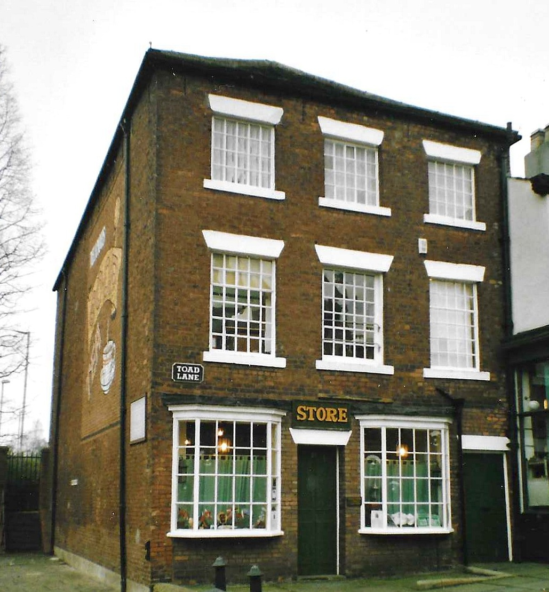

The Rochdale Pioneers
The Rochdale Pioneers were a group of 28 working-class individuals who, in 1844, established a small shop on Toad Lane in Lancashire to provide honest, affordable goods to their community. Faced with the harsh conditions of the Industrial Revolution, they drafted the "Rochdale Principles," which mandated democratic control, fair pricing, and the redistribution of profits to members. Their successful model transformed the cooperative movement from a series of failed experiments into a global blueprint for ethical business. Today, they are celebrated as the founding fathers of the modern worldwide cooperative movement. The Holt family was instrumental to the shop's success. While the Rochdale Pioneers are often remembered as a single group, the four Holt men James, John, Abraham, and Charles (Casson) provided the specific technical skills and labour that kept the Toad Lane shop running during its precarious first years.
The Original Rochdale Pioneers
While historical records sometimes vary on the exact 28 names due to early membership shifts, the recognized list of the "Original Pioneers" includes:
| James Smithies | Charles Howarth | William Cooper |
| David Brooks | John Scowcroft | Joseph Smith |
| James Standring | James Maden | Robert Taylor |
| Samuel Ashworth | James Holt | John Holt |
| Abraham Holt | Charles Holt (Casson) | James Tweedale |
| Samuel Tweedale | William Mallalieu | John Garside |
| John Hill | John Bent | James Bamford |
| Miles Ashworth | George Healey | John Collier |
| John Threlfall | John Lord | Benjamin Jordan |
| James Wilkinson |
Trade: Weaver
James was a cornerstone of the movement’s foundation. As one of the most active early members, he served
as the primary fundraiser and community organizer. During the society's infancy, he undertook the grueling
task of going door-to-door to collect "tuppence" weekly subscriptions. This grassroots effort was critical in
building the initial £28 capital—the "seed money" used to rent the Toad Lane store and purchase the first modest
sacks of unadulterated flour and sugar. Beyond his logistics role, James acted as a mentor to the younger Holts,
fiercely guarding the principles of "pure food and honest weight."
Trade: Fustian Cutter
John brought technical expertise to the operational and supply side of the shop. As a fustian
cutter, he possessed a keen eye for the quality of textiles and raw materials, which he applied to
the cooperative’s inventory. He was instrumental in vetting suppliers to ensure the Pioneers never
sold "adulterated" goods—food common in the 19th century that was often "bulked out" with chalk or
dust. John was also a vocal champion of the Dividend system, believing that giving the poor a tangible
financial stake was the only way to break the cycle of debt caused by "truck shops" (company-owned stores).
Trade: Weaver
Abraham was a key political and philosophical driver within the group. Having witnessed the "Hungry
Forties" and the failure of local labor strikes, he realized that economic cooperation was a faster
path to relief than waiting for political reform. He became a strategist for democratic governance, serving
on the committees that drafted and refined the famous Rochdale Principles. Abraham was a staunch defender of
the "Divi," arguing passionately that profits must be returned to members based on their purchases,
fundamentally shifting the power from the capitalist to the consumer.
Trade: Weaver
Known affectionately by the family moniker "Casson" to distinguish him from his kin, Charles
was the heart of the shop’s daily survival. In the early days, when the society could not
afford paid staff, Charles and his brothers worked behind the counter after finishing their
own grueling shifts in the mills. He was renowned for his steadfastness; during the economic
slump of 1847–1848, when many argued for closure, Charles voted to keep the doors open, often working
for free to prevent bankruptcy. His reliability ensured the shop remained open every
Monday and Saturday night, without fail.
The Rochdale Pioneers Museum
is widely regarded as the home of the worldwide Co-operative movement. It is located in Toad Lane and the store was opened
on December 21 1844 by the Rochdale Equitable Pioneers Society.

The Rochdale Pioneers Museum is housed in the building where the Rochdale Equitable Pioneers Society began trading on 21 December 1844. 31 Toad Lane was originally an 18th-century warehouse on a busy road that then extended to the centre of the town.